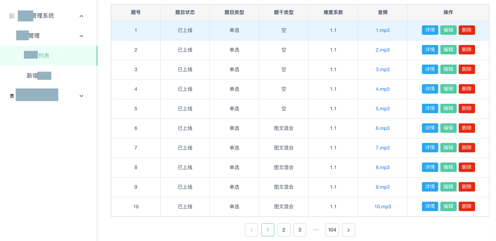

分页=paging=pagination
写REST接口时，常会遇到一种情况是：
前端（web，移动端等）页面需要分多页，列出相关数据，供查看、编辑等操作。
随便截个某个管理后台中的某个数据的列表的图，好让大家有个更直观的理解：

而后台接口不可能，也不合适，一次性返回所有数据，而合理的做法和最佳实践是：分页
英文的说法一般是：paging=pagination
即每次返回一页数据，而想要获取更多数据，或下一页数据，则继续传入不同参数值即可
分页请求时的参数
而设计分页的API时，前端传入的参数中，最常见的，最重要的参数，就是：
- 当前是第几页=
page=cur_page=current_page=curPageNum - 每一页的个数=
per_page=numPerPage=每一页的大小=page_size=pageSize
也有另外一种说法：
- 从哪个开始的=
start：- 另外一种叫法是：偏移量是多少=
offset
- 另外一种叫法是：偏移量是多少=
- 返回的个数限制是多少=
limit
总结一下就是：关于表示当前从哪里开始，要返回多少数据，有如下几类表示方法：
- 页数表示法：
page+per_pagecur_page+per_page
page+page_sizepage+pageSizecurPageNum+pageSizecurPageNum+numPerPage
- 偏移量表示法：
start+limitoffset+limit
对应着前端页面GET请求所访问的典型的url是：
accounts?page=5&per_page=10accounts?limit=100&offset=300accounts?curPageNum=2&numPerPage=20
分页返回的数据
分页返回的结果中，往往也包含了请求中所包含的基本参数，比如当前是第几页和每一页的个数。
另外肯定还要包含真正所需要的数据：
类型：一般都是数组list命名方式：有多种方案可选择：- 不固定：
- 每个不同分页接口用自己的名字：一般采用对应的数据对象的名字，比如：
- 用复数：比如
tasks - 用列表：比如
taskList
- 用复数：比如
- 每个不同分页接口用自己的名字：一般采用对应的数据对象的名字，比如：
- 固定：
- 用固定的字段表示返回的结果：比如
results，items，
- 用固定的字段表示返回的结果：比如
- 不固定：
有时候，为了更加方便前端页面显示，比如希望知道：
- 总的个数有多少
- 是否还有下一页
- 以此来控制页面上的下一页按钮是否可以点击，如果不可点击一般颜色采用灰色，否则显示正常的颜色
这种时候，往往还会加上一些其他相关的参数，比如总页数，总个数，是否还有下一页，是否还有前一页等等。
这类相关参数，加上之前的基本参数，总结起来大概有这些：
page=cur_page=current_page=curPageNum：当前是第几页- 说明：一般从
0或1开始 - 或：
start：从哪个开始的- 说明：一般从
0开始 - =
offset：（离最开始的）偏移量是多少
- 说明：一般从
- 说明：一般从
per_page=numPerPage：每一页的个数- 说明：常见的值有
10，20等等 - =
每一页的大小=page_size=pageSize - 或：
返回的个数限制是多少=limit
- 说明：常见的值有
has_prev=hasPrev：是否还有前一页has_next=hasNext：是否还有后一页pages=totalPageNum：总的页数total=totalNum=counts：总数=总个数=符合当前分页查询条件所返回的总个数items：真正的数据的列表
甚至还有些人会返回前一页和后一页的url：
- previous：前一页的url
- next：后一页的url
比如：
HTTP 200 OK
{
"count": 1023
"next": "https://api.example.org/accounts/?page=5",
"previous": "https://api.example.org/accounts/?page=3",
"results": [
…
]
}
HTTP 200 OK
{
"count": 1023
"next": "https://api.example.org/accounts/?limit=100&offset=500",
"previous": "https://api.example.org/accounts/?limit=100&offset=300",
"results": [
…
]
}
举例
下面给出一些实际的例子。
获取task任务的分页数据
下面给出之前某个Python的Flask + SQLAlchemy项目中查询一个task=任务的分页查询的相关代码：
curPageTaskList = None
taskPagination = None
if curRole == UserRole.Initiator:
taskPagination = Task.query.filter_by(initiatorId=userId).paginate(
page=curPageNum,
per_page=numPerPage,
error_out=False)
elif curRole == UserRole.Errandor:
taskPagination = Task.query.filter_by(errandorId=userId).paginate(
page=curPageNum,
per_page=numPerPage,
error_out=False)
paginatedTaskList = taskPagination.items
paginatedTaskDict = {}
for curIdx, eachTask in enumerate(paginatedTaskList):
paginatedTaskDict[eachTask.id] = marshal(eachTask, task_fields)
respPaginatedTaskInfoDict = {
"curPageNum" : taskPagination.page,
"totalPageNum" : taskPagination.pages,
"numPerPage" : taskPagination.per_page,
"hasPrev" : taskPagination.has_prev,
"hasNext" : taskPagination.has_next,
"totalTaskNum" : taskPagination.total,
'tasks' : paginatedTaskDict
}
以及返回的结果：
{
"code": 200,
"message": "get task/orders ok",
"data": {
"curPageNum": 2,
"hasNext": false,
"hasPrev": true,
"numPerPage": 10,
"tasks": {
"task-10b01105-ec53-41bb-810e-720ab468bdf7": {......},
"task-da013992-e7aa-4ae9-8b6f-bdf621b9fbaa": {......},
"task-f3c0c660-e7f5-4583-bab2-23c7006dadc4": {......},
"task-f7a4d0df-3142-444b-a962-83660acd447f": {......}
},
"totalNum": 14,
"totalPageNum": 2
}
}
相关解释：
- 分页的变量选择用：
curPageNum+numPerPage - 返回的数据的列表：名字用
tasks，表示task任务的复数，真正返回的数据的列表
获取question题目的分页数据
代码：
class QuestionAPI(Resource):
def get(self):
log.info("QuestionAPI GET")
respDict = {
"code": 200,
"message": "Get question ok",
"data": {}
}
parser = reqparse.RequestParser()
# parameters for get question list
parser.add_argument('pageNumber', type=int, default=1, help="page number for get question list")
parser.add_argument('pageSize', type=int, default=settings.QUESTION_PAGE_SIZE,
help="page size for get question list")
...
parser.add_argument('checkpointList', type=str, help="checkpoint for get question list")
...
parsedArgs = parser.parse_args()
log.debug("parsedArgs=%s", parsedArgs)
if not parsedArgs:
return genRespFailDict(BadRequest, "Fail to parse input parameters")
...
# get question list
pageNumber = parsedArgs["pageNumber"]
pageSize = parsedArgs["pageSize"]
if pageNumber < 1:
return genRespFailDict(BadRequest.code, "Invalid pageNumber %d" % pageNumber)
findParam = {}
...
checkpointList = parsedArgs["checkpointList"]
if checkpointList:
maxFilterItemCount = 3
filterItems = checkpointList.strip(', ').split(',')
if len(filterItems) > maxFilterItemCount:
return genRespFailDict(
BadRequest.code,
'{} items found in checkpoint parameter list, of which the max count is 3'.format(
len(filterItems))
)
checkPointFilterParam = [{'checkpoint.{}'.format(index): int(param)}
for index, param in enumerate(filterItems)]
if "$and" in findParam:
findParam["$and"].extend(checkPointFilterParam)
else:
findParam["$and"] = checkPointFilterParam
...
sortBy = "question_number"
log.debug("findParam=%s", findParam)
sortedQuestionsCursor = collectionEvaluationQuestion.find(findParam).sort(sortBy, pymongo.ASCENDING)
totalCount = sortedQuestionsCursor.count()
log.debug("search question: %s -> totalCount=%s", findParam, totalCount)
if totalCount == 0:
respData = {}
else:
# Note: for debug
# follow will cause error:
# pymongo.errors.InvalidOperation cannot set options after executing query
# foundAllQuestions = list(sortedQuestionsCursor)
# log.debug("foundAllQuestions=%s", foundAllQuestions)
totalPageNum = int(totalCount / pageSize)
if (totalCount % pageSize) > 0:
totalPageNum += 1
if pageNumber > totalPageNum:
return genRespFailDict(BadRequest.code, \
"Current page number %d exceed max page number %d" % \
(pageNumber, totalPageNum))
skipNumber = pageSize * (pageNumber - 1)
limitedQuestionsCursor = sortedQuestionsCursor.skip(skipNumber).limit(pageSize)
questionList = list(limitedQuestionsCursor)
removeObjIdList = []
for eachQuestion in questionList:
eachQuestion = filterQuestionDict(eachQuestion)
removeObjIdList.append(eachQuestion)
hasPrev = False
if pageNumber > 1:
hasPrev = True
hasNext = False
if pageNumber < totalPageNum:
hasNext = True
respData = {
"questionList": removeObjIdList,
"curPageNum": pageNumber,
"numPerPage": pageSize,
"totalNum": totalCount,
"totalPageNum": totalPageNum,
"hasPrev": hasPrev,
"hasNext": hasNext,
}
respDict["data"] = respData
return jsonify(respDict)
请求：
GET /question?pageNumber=1&pageSize=10&checkpointList=73,83,85
响应：
{
"code": 200,
"data": {
"curPageNum": 1,
"hasNext": false,
"hasPrev": false,
"numPerPage": 10,
"questionList": [
{
"_id": "5c628227bfaa44aa7b2f56a5",
"active": "Y",
"audio": "",
...
},
{
"_id": "5c628261bfaa44aa7b2f56aa",
"active": "Y",
"audio": "",
...
},
...
],
"totalNum": 3,
"totalPageNum": 1
},
"message": "Get question ok"
}
获取book列表的分页数据
请求：
GET /list.vpage?page_size=20¤t_page=3
响应，返回的json：
{
"success": true,
"total_page": 15,
"total": 300,
"data": [
{
"id": "PBP_10300000138949",
"name": "Cool Cat",
...
},
...
{
"id": "PBP_10300000181801",
"name": "Red Ben",
...
}
],
"current_page": 3,
"page_size": 20,
"selected_lexiler": "BR200L-300L",
"selected_tag": ""
}